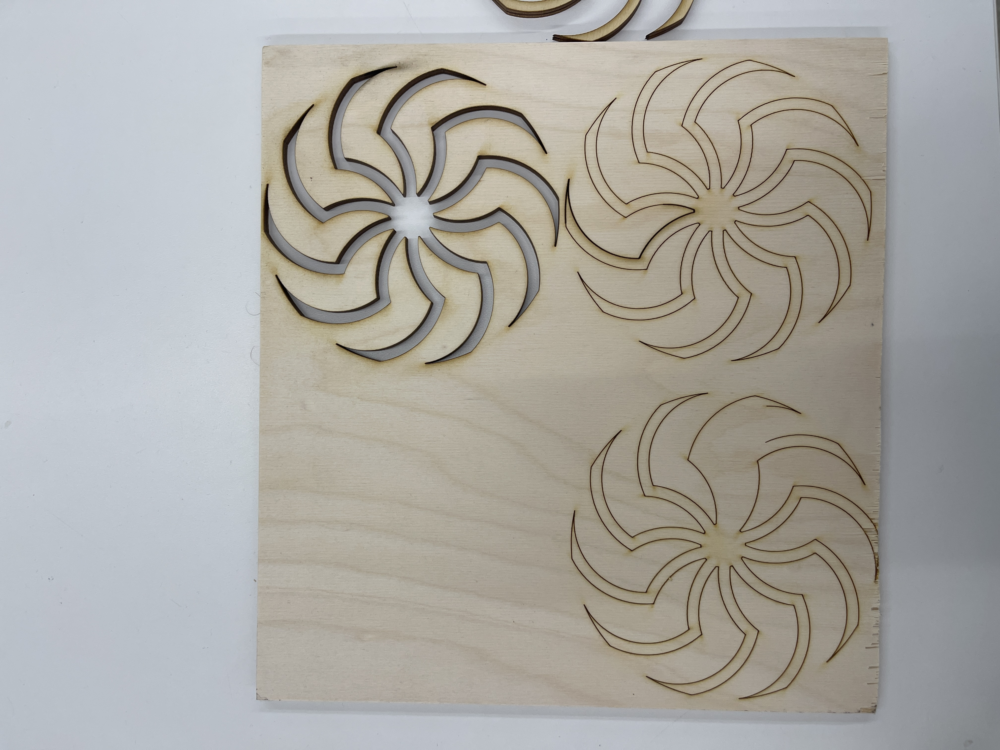
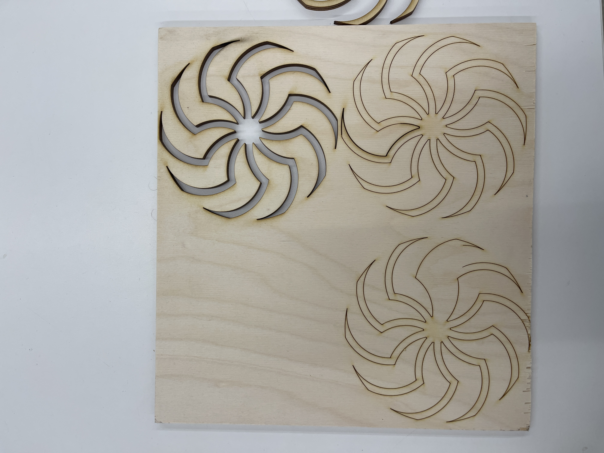

1. Kinetic Sculpture
Throughout the second and third week, we were taught a range of essential skills and techniques with the equipment within the lab. For instance, we learned to use hand saws, and other tools such as vernier calipers, hand files and the bench grinder. In addition, we were also familiarized with using the hand drills and drill presses. With this given knowledge, we were tasked to create a kinetic sculpture.
The two photos below served as inspiration for my kinetic sculpture, as I attempted to create a rotating device that would move an interesting shape to create an optical illusion.


Design Phase (Fusion360):
First, I created a 2D design of one of the hands of the shape. I then utilized the circular pattern tool to create 10 other hands around the center of the shape. After creating all of these shapes, I used the combine tool to fused all of these shapes into one. Here is how I designed the shape in Fusion 360:


Laser Cutting Phase:
With this model and a medium of scrap plywood, I laser cutted these shapes.
 

The next step was to create a running motor which would have an axle that would go through the hole of the